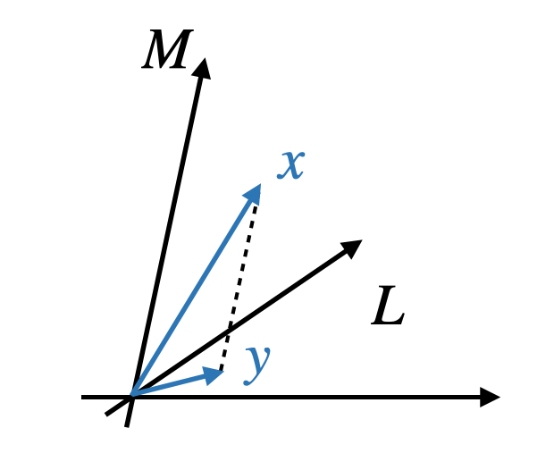
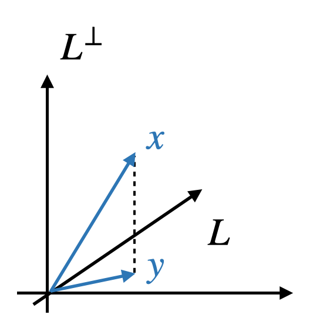

[矩阵论]6.1投影矩阵及其应用
投影算子与投影矩阵
定义
定义（投影算子）：设 \(\mathbb C^n=L\oplus M\)，将任意 \(x\in\mathbb C^n\) 变为沿着 \(M\) 到 \(L\) 的投影的变换称为沿着 \(M\) 到 \(L\) 的投影算子，记作 \(P_{L,M}\)，即： \[ P_{L,M}x=y \] 满足 \(R(P_{L,M})=L,\,N(P_{L,M})=M\). 注意 \(x-y\in M\).

定义（投影矩阵）：投影算子 \(P_{L,M}\) 在 \(\mathbb C^n\) 的基 \(e_1,\ldots,e_n\) 下的矩阵称为投影矩阵。
投影 \(\iff\) 幂等
引理：设 \(A\in\mathbb C^{n\times n}\) 是幂等矩阵，\(A^2=A\)，则： \[ N(A)=R(I-A) \]
证明：任取 \(x\in N(A)\)，则 \(Ax=0\)，则 \(x=Ax+(I-A)x=(I-A)x\in R(I-A)\)，因此 \(N(A)\subset R(I-A)\)；
任取 \(y\in\mathbb C^n\)，\(A(I-A)y=(A-A^2)y=0\)，故 \((I-A)y\in N(A)\)，故 \(R(I-A)\subset N(A)\)；
综上，\(N(A)=R(I-A)\). 证毕。
定理（投影矩阵与幂等矩阵是等价的概念）： \[ P_{n\times n}=P_{L,M}\iff P^2=P \]
证明：必要性。设 \(C^n=L\oplus M\)，则对于任意 \(x\in\mathbb C^n\)，存在唯一的分解 \(x=y+z,\,y\in L,\,z\in M\). 于是 \(P_{L,M}x=y\). 因此 \(P_{L,M}^2x=P_{L,M}y=y=P_{L,M}x\)，即 \(P_{L,M}\) 是幂等的。
充分性。任意 \(x\in\mathbb C^n\) 可分解为 \(x=Px+(I-P)x\)，根据引理知 \(N(P)=R(I-P)\)，又 \(\mathbb C^n=R(P)\oplus N(P)\)，所以这样的分解是唯一的，于是 \(P=P_{R(P),N(P)}\). 证毕。
计算方法
取 \(L\) 的一组基 \(q_1,\ldots,q_r\) 和 \(M\) 的一组基 \((q_{r+1},\ldots,q_n)\)，则任意向量 \(x\in\mathbb C^n\) 可表示为： \[ x=(q_1,\ldots,q_r,q_{r+1},\ldots,q_n)y=Qy \] 于是： \[ P_{L,M}x=QI_ry=QI_rQ^{-1}y\implies P_{L,M}=QI_rQ^{-1} \] 其中 \(I_r\) 表示前 \(r\) 个对角元为 1、其余为 0 的对角矩阵。
正交投影算子与正交投影矩阵
定义
定义（正交投影算子）：设 \(L\) 是 \(\mathbb C^n\) 的子空间，则沿着 \(L^{\perp}\) 到 \(L\) 的投影算子 \(P_{L,L^{\perp}}\) 为正交投影算子，简记为 \(P_L\).

定义（正交投影矩阵）：正交投影算子 \(P_{L}\) 在 \(\mathbb C^n\) 的基 \(e_1,\ldots,e_n\) 下的矩阵称为正交投影矩阵。
正交投影 \(\iff\) 幂等 Hermite
定理：矩阵 \(P\) 为正交投影矩阵的充要条件是 \(P\) 为幂等 Hermite 矩阵。
证明：必要性。若 \(P\) 为正交投影矩阵，则根据上一节定理知它是幂等矩阵，于是 \(R(I-P)=N(P)\)。又 \(R(P)\perp N(P)\)，所以 \(R(P)\perp R(I-P)\)，因此对于任意 \(x,y\in\mathbb C^n\)，有： \[x^HP^H(I-P)y=0\implies P^H(I-P)=0\implies P^H=P^HP\implies P=(P^HP)^H=P^HP=P^H\] 即 \(P\) 是 Hermite 矩阵。
充分性。若 \(P\) 是幂等 Hermite 矩阵，则根据上一节定理知它是投影矩阵 \(P_{R(P),N(P)}\). 又由于 \(P^H=P\)，所以： \[P_{R(P),N(P)}=P_{R(P),N(P^H)}=P_{R(P),R^\perp(P)}\] 即 \(P\) 是正交投影矩阵。证毕。
计算方法
取 \(L\) 的一组基 \(X=(x_1,\ldots,x_r)\)，\(L^{\perp}\) 的一组基 \(y=(y_1,\ldots,y_{n-r})\)，则 \(X^HY=Y^HX=O\). 根据上一节投影矩阵的计算方法知： \[ P_L=P_{L,L^\perp} =\left[\begin{array}{c:c}X&Y\end{array}\right]\;I_r\;\left[\begin{array}{c:c}X&Y\end{array}\right]^{-1} =\left[\begin{array}{c:c}X&O\end{array}\right]\left[\begin{array}{c:c}X&Y\end{array}\right]^{-1} \] 由于： \[ \left[\begin{array}{c:c}X&Y\end{array}\right]^{H}\left[\begin{array}{c:c}X&Y\end{array}\right]=\left[\begin{array}{c}X^H\\\hdashline Y^H\end{array}\right]\left[\begin{array}{c:c}X&Y\end{array}\right]=\left[\begin{array}{c:c}X^HX&O\\\hdashline O&Y^HY\end{array}\right] \] 于是： \[ \left[\begin{array}{c:c}X&Y\end{array}\right]^{-1}=\left[\begin{array}{c:c}(X^HX)^{-1}&O\\\hdashline O&(Y^HY)^{-1}\end{array}\right]\left[\begin{array}{c}X^H\\\hdashline Y^H\end{array}\right]=\left[\begin{array}{c}(X^HX)^{-1}X^H\\\hdashline(Y^HY)^{-1}Y^H\end{array}\right] \] 因此： \[ P_L=\left[\begin{array}{c:c}X&O\end{array}\right]\left[\begin{array}{c:c}X&Y\end{array}\right]^{-1}=\left[\begin{array}{c:c}X&O\end{array}\right]\left[\begin{array}{c}(X^HX)^{-1}X^H\\\hdashline(Y^HY)^{-1}Y^H\end{array}\right]=X(X^HX)^{-1}X^H \]